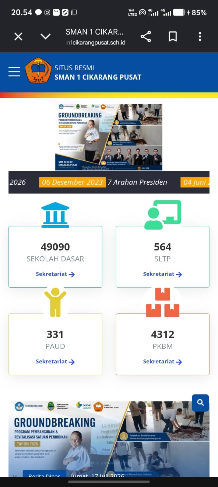
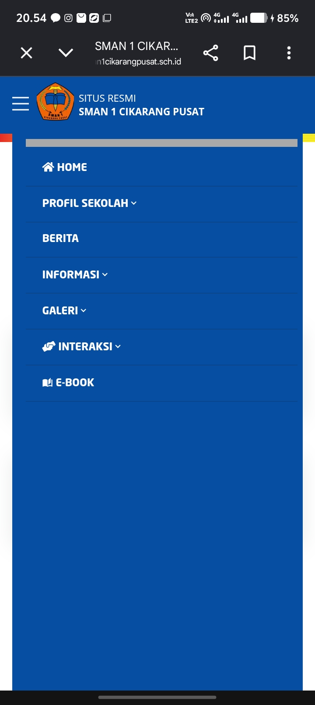
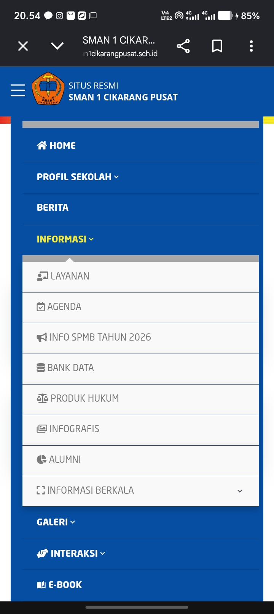
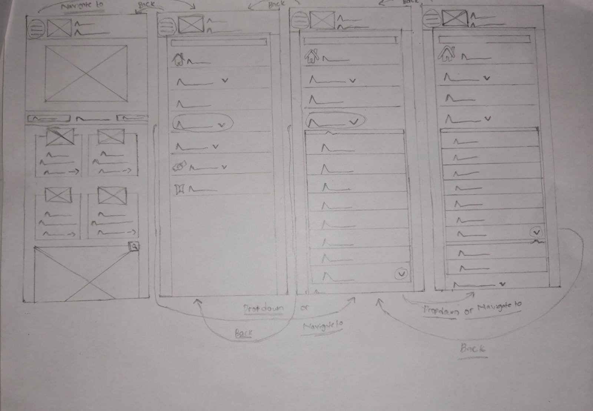

MISSION 03 / PERSONAL CONCEPT
Case
Study
Menganalisis permasalahan yang di alami dan
Mencari solusi nya
01 / INTRODUCTION
Permasalahan dan
Solusi.
Mengobservasi Permasalahan dan Mencari Solusi
OVERVIEW
Problem
Permasalahan navigasi ditemukan pada menu Informasi, khususnya submenu Informasi Berkala, baik pada tampilan mobile maupun desktop. Pada tampilan mobile, arah terbukanya dropdown tidak sesuai dengan arah ikon panah yang menunjukkan keberadaan submenu lanjutan. Sementara itu, pada tampilan desktop, item Informasi Berkala di dalam dropdown menu Informasi tidak memiliki ikon panah, meskipun masih terdapat submenu di dalamnya. Ketidaksesuaian dan ketiadaan penanda tersebut dapat membingungkan pengguna dalam memahami struktur navigasi serta menemukan informasi yang dibutuhkan.
▼
Before redesign
Mobile vs desktop
Mobile



Desktop


As a result...
Solution
Solusi yang diusulkan adalah menyesuaikan ikon panah dengan perilaku dropdown serta melengkapi penanda pada setiap menu yang memiliki submenu. Pada tampilan mobile, arah ikon panah pada menu "Informasi" dan "Informasi Berkala" disesuaikan dengan arah terbukanya submenu serta berubah ketika submenu dibuka atau ditutup. Pada tampilan desktop, ikon panah ditambahkan pada item "Informasi Berkala" untuk menunjukkan adanya submenu lanjutan. Perbaikan ini bertujuan memperjelas struktur navigasi, membuat interaksi lebih konsisten, dan membantu pengguna menemukan informasi yang dibutuhkan.
02 / DESIGN PROCESS
Proses
Desain.
Proses desain melibatkan pengamatan terhadap permasalahan dan pencarian solusi yang efektif.
ANALYSIS / WHAT TO FIX
Sticky Notes


WIREFRAME / STRUCTURE
Wireframe


Proses Perbaikan
Mobile
Memperbaiki navigasi mobile
Ikon panah disesuaikan dengan arah terbukanya dropdown pada menu Informasi dan Informasi Berkala. Ikon juga diperbarui agar berubah antara keadaan terbuka dan tertutup, sehingga pengguna dapat memahami struktur submenu dengan lebih jelas.
Desktop
Memperjelas submenu desktop
Ikon panah ditambahkan pada item Informasi Berkala untuk memberi penanda bahwa menu tersebut memiliki submenu lanjutan. Penempatan dan pola interaksi dropdown diperbaiki agar konsisten dengan struktur navigasi desktop.
Before / After
Perubahan struktur navigasi
sebelum dan sesudah perbaikan
Mobile
Before
After

Desktop
Before
After

03 / CONCLUSION
Kesimpulan
perbaikan.
Perbaikan navigasi ini berhasil membuat struktur Informasi dan Informasi Berkala lebih mudah dipahami pada tampilan mobile maupun desktop.
Hasil Perbaikan
Ikon panah disesuaikan dengan arah dropdown pada mobile, indikator submenu ditambahkan pada desktop, dan struktur menu dibuat lebih konsisten serta mudah dikenali.
Dampak bagi Pengguna
Pengguna dapat lebih cepat memahami menu mana yang memiliki submenu lanjutan sehingga proses pencarian informasi menjadi lebih jelas dan efisien.
Mobile
Desktop